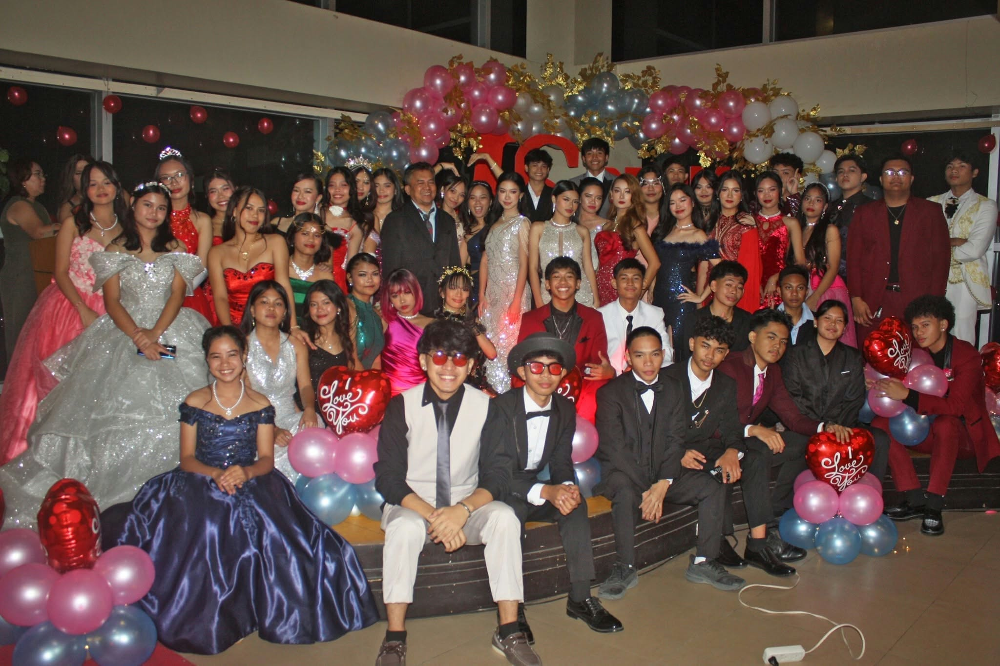

My Senior High School Experience
My Senior High School days are an important part of my life. I have learned many things, met new people, and experienced different challenges.

My School Life and Experiences
My Senior High School days are an important part of my life. I have learned many things, met new people, and experienced different challenges.

Basketball is one of my favorite activities because it keeps me active and allows me to have fun with others.
I hope to make more great memories during my SHS journey.